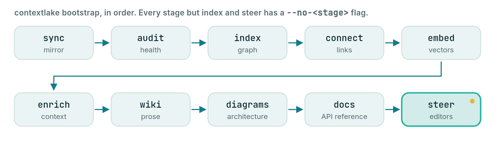

Quickstart
Install, bootstrap, and wire your editor, the whole Mirror -> Knowledge -> Serve path in a few minutes.

On this page
For anyone who wants a first result: on one local repo, or on a whole GitLab fleet.
This page takes you from a fresh machine to a wired AI workspace. At the end, your GitLab repos are mirrored, indexed into a local knowledge graph, and exposed to Claude Code, Windsurf and Kiro. Everything beyond the mirror is optional. This quickstart turns on four things:
- The code graph.
bootstrapalways builds it. - Semantic search. It is on by default and needs an embedder (step 2 installs one).
- The wiki. It is off unless you pass
--llmor enable[llm]. Step 4 passes--llm builtin. - Connectors. They are off until
kb.tomlhas a[[sources]]entry. The example in step 3 adds one.

Try it on one repo, no setup#
You need no GitLab and no config file to try contextlake on a repo you already have. Run these in that repo's directory:
contextlake kb index # parse the current repo into a local knowledge graph
contextlake kb graph --overview --open # open the graph (it names your repo's own view next)
contextlake kb serve # or serve it to your AI editor over MCP
- Not installed yet? Run any command once with
uvx. Putuvx --from "contextlake[kb-full]"in front of it, for exampleuvx --from "contextlake[kb-full]" contextlake kb index. - Where it lands. The graph goes to a local store at
~/.contextlake/kb. Nothing leaves your machine. - Other paths. Index any path with
--source PATH. Index every git repo under a directory with--workspace DIR.
To mirror a whole GitLab group, build the full knowledge layer and wire your editor, follow the fleet path below.
The fleet path#
The steps below mirror a fleet of repos, index them, and wire your editor.
1. Prerequisites#
- Python 3.10+, one floor for the whole tool, mirror and knowledge layer alike
git, plus your platform's token:GITLAB_TOKEN(a personal access token, PAT, withread_api+read_repository), orGITHUB_TOKEN/BITBUCKET_TOKEN/GITEA_TOKENwithplatform = github|bitbucket|giteain the config. On GitLab, an authenticatedglab(glab auth login) works instead of a token.
2. Install#
pipx install "contextlake[kb-full]"
pipx keeps contextlake in its own environment and still puts the command on your PATH.
[kb-full] is an extra, an optional add-on: a group of packages you install with contextlake. This one
installs:
- the knowledge layer;
- the built-in CPU embedder (no Ollama, no API key);
- the
sqlite-vecbackend.
Only [kb-full] adds the embedder, so semantic search works with no extra setup. The plain [kb]
extra leaves it out.
The install gives you the contextlake command. python -m contextlake works too.
python3 run-contextlake.py is a source-checkout launcher and is not in the package.
Using pip, uv, Docker, or a standalone binary instead, or picking extras one by one? Every channel is on one page: Installing and upgrading. It also has the extras table, upgrading, and uninstalling.
Check the install, whichever channel you chose:
contextlake --version
contextlake doctor
doctor reports what is present and what is missing. If it names something you cannot
resolve, Troubleshooting covers the failures that come up most.
3. Configure#
The fast path, contextlake init writes both config files for you (interactive, or
--skip-interactive for defaults):
contextlake init # prompts for platform, group, workspace
contextlake init --platform github --group my-org --skip-interactive # non-interactive
contextlake init --local # scope config to this project instead of ~/
Working across more than one org or project? --local writes config into the current directory instead
of ~/; every subdirectory underneath it inherits it automatically (see
Directory-scoped config).
Prefer to write them by hand? Mirror config, ~/.contextlake.ini:
[contextlake]
work_dir = ~/work
# platform = github # gitlab (default) | github | bitbucket | gitea | codeberg
gitlab_group = your-gitlab-group
Knowledge-layer config, ~/.contextlake/kb.toml (copy
examples/kb.toml.example and keep what you need):
[kb]
store_dir = "~/.contextlake/kb"
# Link each repo to its open GitLab merge requests + issues (uses your glab login):
[[sources]]
type = "gitlab"
name = "gitlab"
group = "your-gitlab-group"
Semantic search ([embeddings]) is on by default and needs a provider: a local Ollama, any
OpenAI-compatible endpoint (hosted key or a local server like LM Studio / Jan), or the built-in
embedder from [kb-full]. The curated wiki needs a model too: enable [llm] in kb.toml, which
is off by default. Everything here is optional; the graph and search work with no
model at all.
A hosted key is read from the environment variable that api_key_env names in that section. It is
never stored in config. The defaults are OPENAI_API_KEY for the openai provider and
ANTHROPIC_API_KEY for anthropic. A local Ollama or the built-in models need no key.
Model providers has the setup for each provider.
4. Bootstrap, one command#
This step uses the built-in wiki model, --llm builtin. It is a local CPU model (Qwen2.5-Coder,
downloaded once) and it needs the llm-local extra. Whether you install that extra first depends on
how you installed contextlake:
- Standalone binary. It has the extra already (it installs it on first run). Skip to the command below.
- Full Docker image. It ships the extra baked in, with the 0.5B model. Skip to the command below.
- pip, pipx or uv. Install the extra first:
contextlake doctor --fix llm-local
That installs into the interpreter contextlake is running in. It prints the exact command
before it runs it, and --dry-run prints it and stops. The extra is an ordinary wheel: no compiler,
no index URL. See Installing and upgrading and
Installing the built-in LLM.
Then run bootstrap:
contextlake bootstrap --llm builtin
Both config files are read from the default locations above; pass --config /
--kb-config only if you keep them elsewhere.
The model itself downloads on the first wiki run (349 MB for the 0.5B). With no model set, that run picks a size from the free RAM (0.5B to 14B) and prints its download size first. On a terminal it asks you.
This command mirrors your repos, then runs these stages in order:
- Index the code into a graph.
- Link the graph to tickets, designs and chats. These links are the connectors.
- Build vectors, which let search match meaning and not only names.
- Search the connected sources for documents about each repo (this is enrich).
- Write the curated wiki.
- Draw the architecture.
- Write the API reference.
- Write the steering files (rule files) your editor reads.
Some stages need setup first:
- Stage 2 needs a
[[sources]]entry inkb.toml. Without one, the connect stage says that no connector sources are configured and moves on. - Stage 4 needs a term-searchable source: an
mcpsource with atool, anatlassiansource, or anapisource withsearch_url. Thegitlabexample does not count. Without one, enrich says "No term-searchable sources configured" and moves on. - Stage 3 needs an embedder.
[embeddings]is on by default withprovider = "auto", which uses a local Ollama or the built-in embedder from[kb-full]. If neither is there, the stage reports why. - Stage 5 needs a model:
--llm, or[llm]enabled inkb.toml. Without either, it is skipped. - Stages 1, 6, 7 and 8 need no model.
Everything generated (graph, vectors, wiki pages, exports) lands under a single store_dir, so
pointing that at a workspace folder (e.g. store_dir = "~/work/my-kb") keeps the whole
knowledge base in one folder you can find.
Prefer --llm ollama or --llm openai for higher-quality prose; without any --llm
(and without [llm] enabled in kb.toml) the wiki stage is skipped. Useful toggles:
- already have the repos cloned? add
--no-sync - no model configured yet? drop
--llmand add--no-embed(graph + search still build)
5. Wire your editor#
bootstrap already wrote .mcp.json, AGENTS.md, CLAUDE.md, .windsurfrules,
.kiro/steering/, and a .claude/skills/ + .windsurf/workflows/ library into your
workspace. To register the server with Claude Code explicitly:
claude mcp add contextlake-kb -- contextlake kb serve --config ~/.contextlake/kb.toml
Windsurf / Devin and Kiro pick up the generated config and rules
automatically. Now ask your agent: "where is ForecastService defined?", "who calls
load_readings?", "which repos depend on shared-core?", it queries the graph and cites
files instead of guessing. The installed skills give even a small-context model a
strong operating playbook.
6. Keep it fresh#
bootstrap is incremental and branch-safe. It re-indexes only repos with new
commits (their git HEAD moved) and never touches an in-progress working tree, so it's safe to run on a
schedule. You have three options:
contextlake schedule. It measures a run and installs a background job for you. Start with Scheduling runs for the prerequisites.- cron. Add this line to your own crontab (
crontab -e). The job runs as your user, so it needs your platform token (for exampleGITLAB_TOKEN) and the config files from step 3 in that user's environment.
*/30 * * * * contextlake --log-file ~/.contextlake/refresh.log bootstrap
Use --log-file, not a >> shell redirect: the handler behind --log-file rotates itself
(5 MB, 3 backups) and a redirect grows without limit until you notice.
- systemd user units. Copy the files in examples/ and follow the steps in their comments.
For the full details, see the Command reference and Configuration.